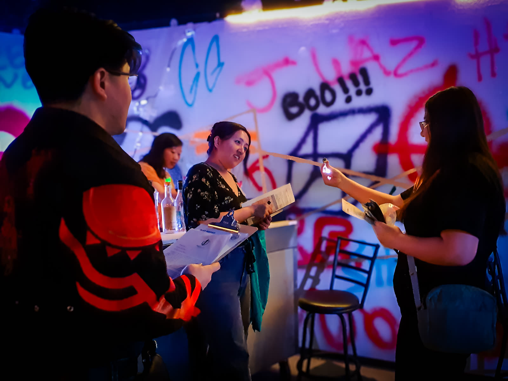
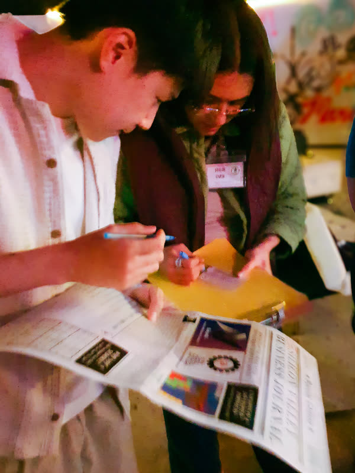
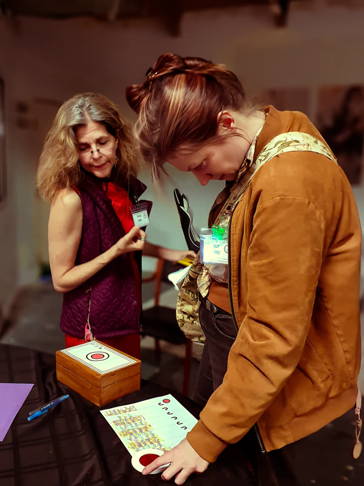
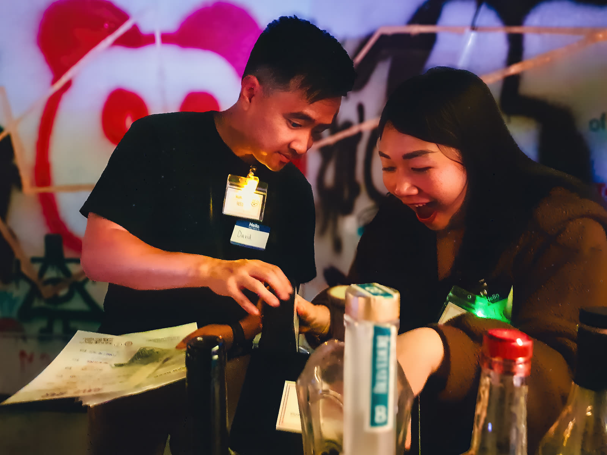
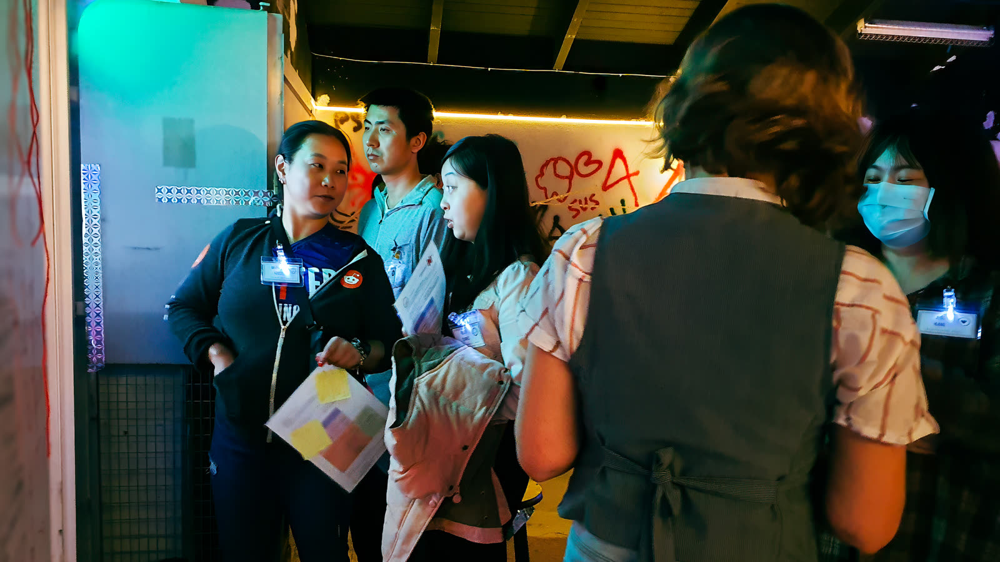

A Playable Crime Thriller
From Award Winning Puzzle, Game, and Immersive Theater designers
SF Chronicle Datebook Pick
Some memories are worth killing for.
Join the Party Got Questions?Marcus Blackwood - NeurAI's notorous CEO
An underground party with Silicon Valley's rising stars
The warehouse. The music. The deals made.
This morning you wake up to find
Marcus is dead.
Your memories were taken.
And now those memories are up for sale.

Solving a murder was never this fun.
Tri-City VoiceThe experience isn't just a whodunnit but what economists might liken to a prisoner's dilemma.
San Francisco ChronicleThink escape room meets murder mystery — but you're not solving for the "right" answer.
Every puzzle unlocks a piece of the past. Backstory. Relationships. What actually happened at that party. Call it narrative archeology. You're digging up secrets that belong to everyone in the room.
But here's the thing: you get to CHOOSE whether or not you share what you've found.
Bury a memory for profit. Expose it as evidence. Trade it for leverage. The "truth" that emerges isn't always the objective truth.
Instead, as you discover more about yourself and others, you are piecing together a 'truth' convincing enough to the authorities to clear YOUR name.

You don't need to be an actor — there's no audience watching. You don't need to be a puzzle expert — you could never touch a lock and still play a crucial role in shaping the story.
You just need to decide: what kind of story do you want to tell tonight?
The setup is unique and interesting, and I really like the depth of story (even if we didn't find all of it) and the way the bits of story we did find weaved into our own narrative.
— Player FeedbackFounder | Patchwork Adventures
Shuai Chen is founder of Patchwork Adventures. Her Order of the Golden Scribe: Initiation Tea won the 2023 Golden Lock Award, No Proscenium's Best Immersive Experience Award, and the 2024 IMMY Award for Outstanding Immersive Work. She represented Team USA at the Escape Room World Championships. Her background in neurobiology (MIT, Stanford) informs experiences where memory, perception, and reality blur.
Experience Designer & Creative Director | StoryPunk
Founder of StoryPunk, a creative studio specializing in immersive storytelling. He received the 2022 CALI Catalyst Award for equity-centered practice. His work includes "The Super Secret Society: A Playable Play" (SF Chronicle), and during the pandemic he produced over 450 digital events employing 200+ artists. Max previously served as Co-Artistic Director at Dragon Productions Theatre Company (2019-2021) and Associate Artistic Director at Epic Immersive (2015-2019).
Experience Designer & Storyteller | Palace Games, Odd Salon, We Players
Casey Selden is a San Francisco–based experience designer, theater maker and unconventional educator whose work invites audiences to explore hidden histories and question traditional narratives. Her programs spark curiosity, cultivate community, and transform how people see place, self, and story. For About Last Night.., Selden brings an expertise in shaping social dynamics, making it comfortable for strangers to explore uncomfortable truths together.
Fremont's Premier Escape Room Venue
Silicon Valley's hub for innovative gaming experiences. Partnering to bring this groundbreaking fusion of escape room mechanics and immersive theater to life in their transformed warehouse space.
Overall it was a lot of fun, and I'm eager to play again at some point to get deeper into the experience.
— Player FeedbackAbout Last Night... is a collage of game elements that 'aren't supposed to go together'
We wanted to combine our favorite aspects of escape rooms, immersive experiences, and tabletop gaming.
We wanted to explore the boundaries of what is possible in experience design.

We wanted it to be a game that is still accessible to all of our friends, without asking them to be actors, puzzle savants, or social butterflies.
Most of all, in an age when our personal information and ability to connect are getting increasingly commoditized, we wanted to create a social experience where we could collectively explore some very-real-sh*t™ through the lens of fiction.
This project is made by a small team of independent artists who've spent years in escape rooms, immersive theater, and game design, using our personal resources to to create something weird and interesting while equitably paying our performers and facilitators who make running our game possible.
It's ambitious. It's DIY. And it is constantly evolving.
Every run we learn something to make it better.
If that sounds like your kind of weird, Join the party! Let's tell a story about last night together.

A way to not only recover memories, but to create some.
Tri-City VoiceReal answers to real questions.
The short version: A playable crime thriller where you are a suspect with missing memories. Solve puzzles, uncover secrets, decide what to bury or expose. Learn more about how the game is played.
Scroll down to select your entry point into the investigation. Then select the date and time you’d like to book.
For private games, corporate events, or custom scheduling, email aboutlastnightgame@gmail.com with your preferred date/time and group size (5-20 players).
No, the entrance will always be unlocked the whole time. You are free to leave at any point if needed. This is a playable, interactive puzzle mystery experience, but safety is always our main concern and no participants will be locked or bound in any way.
Minimum 5 players, maximum 20.
What's the sweet spot? The game scales well across the range, but 10-16 players tends to hit the best balance of social complexity and puzzle coverage. Smaller groups (5-8) feel more intimate and collaborative. Larger groups (16-20) beget more chaotic negotiation and competing agendas.
Don't have a full group? You'll be paired with others. Trust us, playing with strangers adds to the tension and strategy.
Possibly. This game thrives on unexpected alliances and rivalries. This game is designed to mitigate the awkwardness of talking to strangers, and in our earlier runs, we've even seen new friendships form. If you prefer a private session, contact us to arrange a dedicated time slot for your group.
Plan for 2 hours total, including orientation and gameplay.
This is a limited-run pop-up experience.
Off the Couch Games in Fremont, CA
555 Mowry Avenue, Fremont, CA 94536
Feb 26 - May 31, 2026
Fri & Sat 8pm | Sun 7pm
Contact us for private games and weekday bookings at aboutlastnightgame@gmail.com — include your preferred date/time and group size (5-20 players)
We're at Off the Couch Games, 555 Mowry Ave, Fremont, CA 94536.
Get directions →
Driving: Plenty of free parking available on site. No stress about finding a spot.
Public Transit: Fremont BART is about 1 mile away. AC Transit Lines 200 and 216 run along Mowry Ave and connect directly to the station. Otherwise, it's a quick rideshare from BART.
Individual tickets are $75 per person.
Coming with work? Contact us for corporate packages.
NOTAFLOF
We set the ticket price for About Last Night... to reflect the costs of running an experience with actors in the SF Bay Area. However, we hate that puzzle games and immersive experiences are typically only accessible to the privileged. If you're interested in experiencing About Last Night... but the price is prohibitive for you, please feel free to use one of these promo codes to make the experience accessible. We make all of these discount levels available and trust our players to choose based on their level of need:
ALNDiscount25: 25% off tickets
ALNDiscount50: 50% off tickets
ALNDiscount75: 75% off tickets
We recommend 16+ due to complex themes and strategic gameplay. Under 18 must be accompanied by an adult.
There are no jump scares or horror elements. This is a psychological thriller focused on mystery, deduction, and social dynamics. Think noir crime thriller, not haunted house.
Themes include: memory loss, corporate conspiracy, infidelity, substance use references, artificial intelligence, and psychological manipulation. No physical contact is required between players.
All areas of this game are wheelchair accessible. There are no crawling or stairs required. The entire experience takes place on one level with wide pathways throughout.
No more questions. Time to remember.
Join the PartyMy group and I were amazed by the amount of work that went into creating the room and all of its moving parts—we're still talking about it!
— Player Feedback
Select your entry point into the investigation.
Time slots are limited • Authorities have been ALERTED • Case sessions fill rapidly
LOCATION: Off the Couch Games · 555 Mowry Ave, Fremont, CA 94536
PRIVATE BOOKINGS: Want a private experience or custom date? Email us at aboutlastnightgame@gmail.com with your preferred date/time and group size (5-20 players).